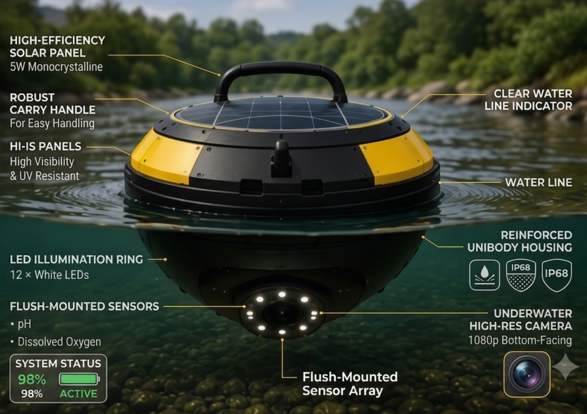
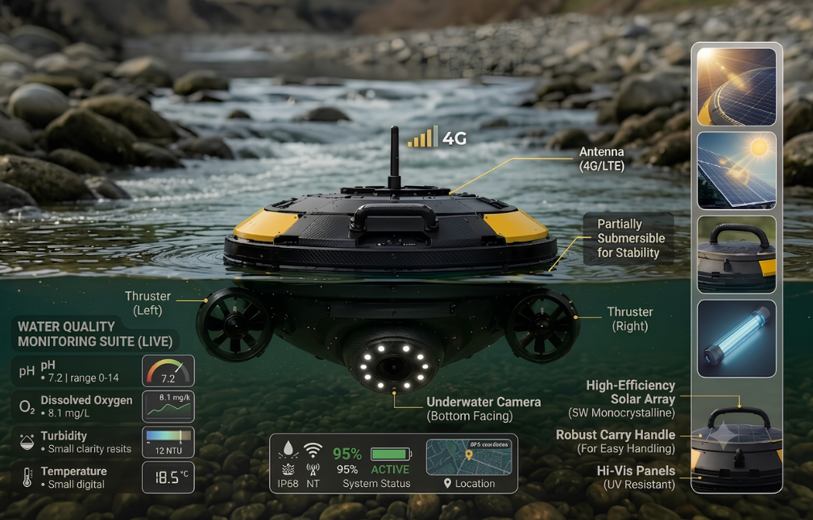

Product
i-RIS and i-BUSS are different physical units built for different jobs, but both run on the same i-BIS software brain underneath: the same detection, the same contamination mapping, the same live readout.
River contamination doesn't only affect the people who regulate it. It also affects the people who fish it, farm beside it, and drink from it every day. i-BIS is built to serve both.
One system. A public safety net for communities, and a compliance-grade tool for the institutions accountable to them.

Stationary monitoring buoy
A fixed monitoring station, anchored at one point in the river for continuous, always-on readings.
5W monocrystalline, continuous power with no battery swaps.
For easy single-person handling and deployment.
Built to withstand prolonged sun and weather exposure.
12 white LEDs, lights the scene for low-light and underwater capture.
At-a-glance visual check that the unit is floating and sealed correctly.
IP68-rated, fully waterproof and dustproof.
pH and dissolved oxygen sensors.
1080p, bottom-facing.
Battery level and active/inactive state shown directly on the unit.

Mobile underwater survey unit
A mobile unit that actively navigates between river stations, useful for surveying wider areas or higher fish-density zones rather than sitting in one fixed spot.
Left and right thrusters let the unit actively move and navigate rather than staying fixed in place.
Live data connectivity while roaming, not dependent on a fixed local connection.
Stays stable in current while moving.
5W monocrystalline, continuous power on extended surveys.
For easy handling and deployment.
Built to withstand prolonged sun and weather exposure.
Bottom-facing, for continuous visual monitoring while moving.
Real-time pH (0–14), dissolved oxygen (mg/L), turbidity (NTU) and temperature, all on a live onboard readout.
Live connectivity, battery and location status shown on-device.